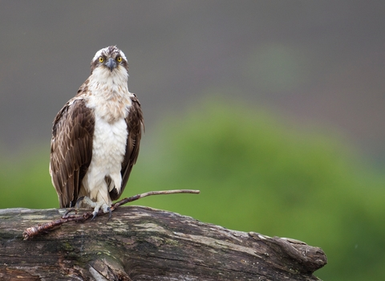
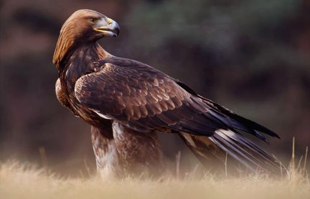
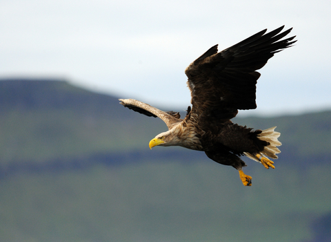

stuff
| Wingspan | Lifespan | Weight | Number of Breeding Pairs |
|---|---|---|---|
| 150-180cm | 9 years | 900-2100 grams | 300 |
Ospreys are mainly found in scotland, in Lochs, so personally, I think that Loch Insh and Loch garten are best.

BLIH BLAH BLAH
| Wingspan | Lifespan | Weight | Number of breeding Pairs |
|---|---|---|---|
| 180-230cm | 20-30 years | Male 2.8-4.6kg Female 3.6-6.7kg | 500 |
Golden Eagles hunt moorland or upper heathland as the hunt grouse, ptarmigan, hares and even young deer. Those habitats in The Cairngorms National Park is great as most of the Uk population lives there.

BLIH BLAH BLAH
| Wingspan | Lifespan | Weight | Number of breeding pairs |
|---|---|---|---|
| 180-240cm | 20-25 years | Males 3.5-5kg Females 4-7kg | 100-150 |
The White tailed eagle feeds on large fish, so most live near the sea, but some do live inland. Loch Druidbeg and The Isle of Mull are the best places in the country to see them.